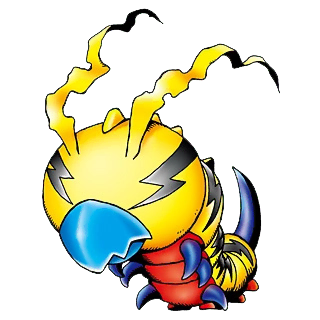
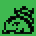
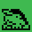

kunemon
- Stage: Child
- Type: Virus
- Sleep Time: 10:00 PM
- Power: 10
A Larva Digimon with a lightning pattern on its body.
Insectoid Digimon children are peculiar beasts even among Digimon, as their Digivolved forms are still unclear. Even so, the discovery of Kunemon suggests that the existence of Insectoid Digimon aside from Kabuterimon will be confirmed one day.
It is uncertain whether or not the bolt-shaped patterns on what seems to be Kunemon’s face act as optic organs, but the fact that they change shape according to its emotions makes it a distinct possibility.
This Digimon loves pranks. It uses its special move Electric Thread to spit an electrified thread from its hard beak. Anything entwined in this thread passes out from shock.
tokomon
- Wait 10 minutes
ogremon
- Care Mistakes: 0-2
- Training: 16+
bakemon
- Care Mistakes: 3+
- Training: 8-15
- Overfeed: 0-2
shellmon
- Care Mistakes: 0-2
- Training: 0-15
drimogemon
- Care Mistakes: 3+
- Training: 16+
- Overfeed: 3+
sukamon
- Care Mistakes: 3+
- Training: 0-7
- or
- Care Mistakes: 3+
- Training: 16+
- Overfeed: 0-2
hola3